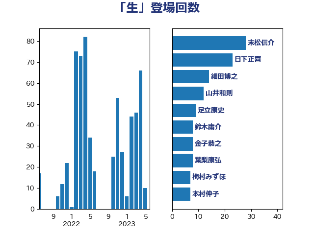

単語「生」

| 末松信介 | 自由民主党 | 28 回 |
| 日下正喜 | 公明党 | 23 回 |
| 細田博之 | 自由民主党 | 14 回 |
| 山井和則 | 立憲民主党 | 12 回 |
| 足立康史 | 日本維新の会 | 9 回 |
| 鈴木庸介 | 立憲民主党 | 8 回 |
| 金子恭之 | 自由民主党 | 8 回 |
| 葉梨康弘 | 自由民主党 | 8 回 |
| 梅村みずほ | 日本維新の会 | 7 回 |
| 本村伸子 | 日本共産党 | 7 回 |
| 斎藤洋明 | 自由民主党 | 7 回 |
| 徳永久志 | 立憲民主党 | 7 回 |
| 井野俊郎 | 自由民主党 | 7 回 |
| 空本誠喜 | 日本維新の会 | 6 回 |
| 山際大志郎 | 自由民主党 | 6 回 |
| 塩川鉄也 | 日本共産党 | 6 回 |
| 古川禎久 | 自由民主党 | 6 回 |
| 高橋光男 | 公明党 | 5 回 |
| 赤羽一嘉 | 公明党 | 5 回 |
| 萩生田光一 | 自由民主党 | 5 回 |
| 秋葉賢也 | 自由民主党 | 5 回 |
| 神田潤一 | 自由民主党 | 5 回 |
| 津島淳 | 自由民主党 | 5 回 |
| 池田佳隆 | 自由民主党 | 5 回 |
| 永岡桂子 | 自由民主党 | 5 回 |
| 松野博一 | 自由民主党 | 5 回 |
| 平林晃 | 公明党 | 5 回 |
| 吉田統彦 | 立憲民主党 | 5 回 |
| 西野太亮 | 自由民主党 | 4 回 |
| 福島伸享 | 無所属 | 4 回 |
| 石橋通宏 | 立憲民主党 | 4 回 |
| 滝沢求 | 自由民主党 | 4 回 |
| 柚木道義 | 立憲民主党 | 4 回 |
| 林芳正 | 自由民主党 | 4 回 |
| 杉本和巳 | 日本維新の会 | 4 回 |
| 岬麻紀 | 日本維新の会 | 4 回 |
| 小野泰輔 | 日本維新の会 | 4 回 |
| 五十嵐清 | 自由民主党 | 4 回 |
| 齋藤健 | 自由民主党 | 3 回 |
| 須藤元気 | 無所属 | 3 回 |
| 阿部司 | 日本維新の会 | 3 回 |
| 鈴木馨祐 | 自由民主党 | 3 回 |
| 野村哲郎 | 自由民主党 | 3 回 |
| 田村貴昭 | 日本共産党 | 3 回 |
| 田中健 | 国民民主党 | 3 回 |
| 牧原秀樹 | 自由民主党 | 3 回 |
| 杉田水脈 | 自由民主党 | 3 回 |
| 木村次郎 | 自由民主党 | 3 回 |
| 早坂敦 | 日本維新の会 | 3 回 |
| 打越さく良 | 立憲民主党 | 3 回 |
| 川田龍平 | 立憲民主党 | 3 回 |
| 川合孝典 | 国民民主党 | 3 回 |
| 寺田静 | 無所属 | 3 回 |
| 和田有一朗 | 日本維新の会 | 3 回 |
| 加藤勝信 | 自由民主党 | 3 回 |
| 前川清成 | 日本維新の会 | 3 回 |
| 佐藤正久 | 自由民主党 | 3 回 |
| 高良鉄美 | 無所属 | 2 回 |
| 鎌田さゆり | 立憲民主党 | 2 回 |
| 鈴木隼人 | 自由民主党 | 2 回 |
| 鈴木義弘 | 国民民主党 | 2 回 |
| 鈴木敦 | 国民民主党 | 2 回 |
| 金村龍那 | 日本維新の会 | 2 回 |
| 野間健 | 立憲民主党 | 2 回 |
| 野田佳彦 | 立憲民主党 | 2 回 |
| 谷合正明 | 公明党 | 2 回 |
| 西銘恒三郎 | 自由民主党 | 2 回 |
| 西村康稔 | 自由民主党 | 2 回 |
| 簗和生 | 自由民主党 | 2 回 |
| 福重隆浩 | 公明党 | 2 回 |
| 福島みずほ | 社会民主党 | 2 回 |
| 石垣のりこ | 立憲民主党 | 2 回 |
| 海江田万里 | 立憲民主党 | 2 回 |
| 河西宏一 | 公明党 | 2 回 |
| 池畑浩太朗 | 日本維新の会 | 2 回 |
| 木原誠二 | 自由民主党 | 2 回 |
| 新妻秀規 | 公明党 | 2 回 |
| 後藤茂之 | 自由民主党 | 2 回 |
| 山田勝彦 | 立憲民主党 | 2 回 |
| 山添拓 | 日本共産党 | 2 回 |
| 山崎正恭 | 公明党 | 2 回 |
| 山口那津男 | 公明党 | 2 回 |
| 山下雄平 | 自由民主党 | 2 回 |
| 小倉將信 | 自由民主党 | 2 回 |
| 天畠大輔 | れいわ新選組 | 2 回 |
| 加田裕之 | 自由民主党 | 2 回 |
| 佐藤英道 | 公明党 | 2 回 |
| 仁木博文 | 無所属 | 2 回 |
| 井出庸生 | 自由民主党 | 2 回 |
| 中川宏昌 | 公明党 | 2 回 |
| 上野通子 | 自由民主党 | 2 回 |
| 上田清司 | 国民民主党 | 2 回 |
| 一谷勇一郎 | 日本維新の会 | 2 回 |
| 鶴保庸介 | 自由民主党 | 1 回 |
| 高見康裕 | 自由民主党 | 1 回 |
| 高橋克法 | 自由民主党 | 1 回 |
| 高木かおり | 日本維新の会 | 1 回 |
| 音喜多駿 | 日本維新の会 | 1 回 |
| 青木愛 | 立憲民主党 | 1 回 |
| 青山繁晴 | 自由民主党 | 1 回 |
| 青山大人 | 立憲民主党 | 1 回 |
| 階猛 | 立憲民主党 | 1 回 |
| 阿部知子 | 立憲民主党 | 1 回 |
| 長谷川岳 | 自由民主党 | 1 回 |
| 長妻昭 | 立憲民主党 | 1 回 |
| 長友慎治 | 国民民主党 | 1 回 |
| 鈴木貴子 | 自由民主党 | 1 回 |
| 金子恵美 | 立憲民主党 | 1 回 |
| 金城泰邦 | 公明党 | 1 回 |
| 重徳和彦 | 立憲民主党 | 1 回 |
| 西岡秀子 | 国民民主党 | 1 回 |
| 藤川政人 | 自由民主党 | 1 回 |
| 落合貴之 | 立憲民主党 | 1 回 |
| 舩後靖彦 | れいわ新選組 | 1 回 |
| 紙智子 | 日本共産党 | 1 回 |
| 米山隆一 | 立憲民主党 | 1 回 |
| 篠原孝 | 立憲民主党 | 1 回 |
| 笠浩史 | 無所属 | 1 回 |
| 笠井亮 | 日本共産党 | 1 回 |
| 竹内真二 | 公明党 | 1 回 |
| 神谷裕 | 立憲民主党 | 1 回 |
| 礒崎哲史 | 国民民主党 | 1 回 |
| 白石洋一 | 立憲民主党 | 1 回 |
| 田畑裕明 | 自由民主党 | 1 回 |
| 田村智子 | 日本共産党 | 1 回 |
| 牧山ひろえ | 立憲民主党 | 1 回 |
| 片山さつき | 自由民主党 | 1 回 |
| 熊谷裕人 | 立憲民主党 | 1 回 |
| 深澤陽一 | 自由民主党 | 1 回 |
| 浮島智子 | 公明党 | 1 回 |
| 浜野喜史 | 国民民主党 | 1 回 |
| 浜地雅一 | 公明党 | 1 回 |
| 浜口誠 | 国民民主党 | 1 回 |
| 河野太郎 | 自由民主党 | 1 回 |
| 池下卓 | 日本維新の会 | 1 回 |
| 江田憲司 | 立憲民主党 | 1 回 |
| 水岡俊一 | 立憲民主党 | 1 回 |
| 武部新 | 自由民主党 | 1 回 |
| 櫻井周 | 立憲民主党 | 1 回 |
| 櫛渕万里 | れいわ新選組 | 1 回 |
| 榛葉賀津也 | 国民民主党 | 1 回 |
| 森屋隆 | 立憲民主党 | 1 回 |
| 梅谷守 | 立憲民主党 | 1 回 |
| 柳ヶ瀬裕文 | 日本維新の会 | 1 回 |
| 枝野幸男 | 立憲民主党 | 1 回 |
| 松本剛明 | 自由民主党 | 1 回 |
| 松山政司 | 自由民主党 | 1 回 |
| 杉久武 | 公明党 | 1 回 |
| 末次精一 | 立憲民主党 | 1 回 |
| 木原稔 | 自由民主党 | 1 回 |
| 有村治子 | 自由民主党 | 1 回 |
| 早稲田ゆき | 立憲民主党 | 1 回 |
| 斎藤嘉隆 | 立憲民主党 | 1 回 |
| 斎藤アレックス | 国民民主党 | 1 回 |
| 斉藤鉄夫 | 公明党 | 1 回 |
| 徳永エリ | 立憲民主党 | 1 回 |
| 岸田文雄 | 自由民主党 | 1 回 |
| 岩谷良平 | 日本維新の会 | 1 回 |
| 岡本三成 | 公明党 | 1 回 |
| 山本香苗 | 公明党 | 1 回 |
| 山口壯 | 自由民主党 | 1 回 |
| 山口俊一 | 自由民主党 | 1 回 |
| 山下芳生 | 日本共産党 | 1 回 |
| 小渕優子 | 自由民主党 | 1 回 |
| 小池晃 | 日本共産党 | 1 回 |
| 宮澤博行 | 自由民主党 | 1 回 |
| 宮本岳志 | 日本共産党 | 1 回 |
| 安江伸夫 | 公明党 | 1 回 |
| 太栄志 | 立憲民主党 | 1 回 |
| 塩村あやか | 立憲民主党 | 1 回 |
| 堂故茂 | 自由民主党 | 1 回 |
| 城井崇 | 立憲民主党 | 1 回 |
| 國重徹 | 公明党 | 1 回 |
| 吉田宣弘 | 公明党 | 1 回 |
| 吉田久美子 | 公明党 | 1 回 |
| 吉田はるみ | 立憲民主党 | 1 回 |
| 吉川元 | 立憲民主党 | 1 回 |
| 原口一博 | 立憲民主党 | 1 回 |
| 北神圭朗 | 無所属 | 1 回 |
| 勝部賢志 | 立憲民主党 | 1 回 |
| 倉林明子 | 日本共産党 | 1 回 |
| 佐々木さやか | 公明党 | 1 回 |
| 伊藤渉 | 公明党 | 1 回 |
| 伊藤孝江 | 公明党 | 1 回 |
| 伊藤孝恵 | 国民民主党 | 1 回 |
| 井上哲士 | 日本共産党 | 1 回 |
| 中田宏 | 自由民主党 | 1 回 |
| 中川正春 | 立憲民主党 | 1 回 |
| 世耕弘成 | 自由民主党 | 1 回 |
| 上杉謙太郎 | 自由民主党 | 1 回 |
| 上月良祐 | 自由民主党 | 1 回 |
| 三浦信祐 | 公明党 | 1 回 |
| たがや亮 | れいわ新選組 | 1 回 |
| おおつき紅葉 | 立憲民主党 | 1 回 |